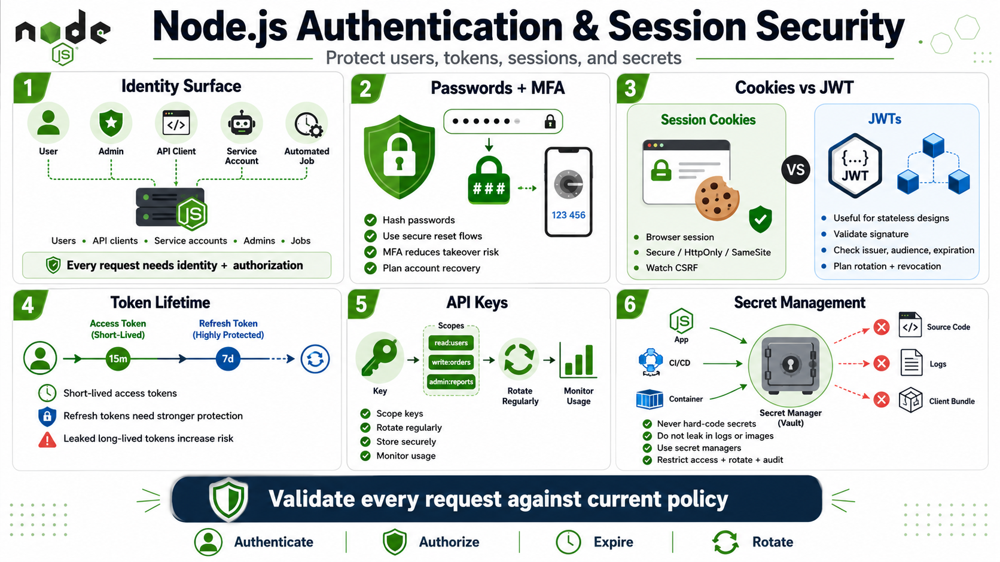

Authentication, Sessions, and Secrets
Connecting to LMS... Progress: in progress

Narration
Authentication and session management are central to Node.js application security because many services handle users, API clients, service accounts, administrators, and automated jobs. Password handling should rely on appropriate password hashing, policy, and reset flows rather than custom storage ideas. Multi-factor authentication can reduce account takeover risk when designed and operated with clear recovery processes.
Session cookies and JSON Web Tokens solve different problems and create different risks. Cookies can be protected with attributes that reduce exposure in browser contexts, but they need CSRF consideration when automatically sent by the browser. JWTs can be useful for stateless or distributed designs, but teams must manage signing, validation, audience, issuer, expiration, rotation, and revocation expectations carefully.
Token lifetime matters. Long-lived access tokens increase exposure when leaked. Refresh tokens need stronger protection because they can extend access. API keys should be scoped, rotated, monitored, and stored securely. The server should validate every request based on current policy rather than trusting that possession of a token automatically answers every authorization question.
Secrets should not be hard-coded in source code or casually placed in logs, build output, container images, client bundles, or CI/CD configuration. Environment variables can be part of a secret strategy, but they are not a complete security program by themselves. Secret managers, restricted access, rotation, audit logging, and safe deployment practices help keep secrets from becoming permanent hidden liabilities.